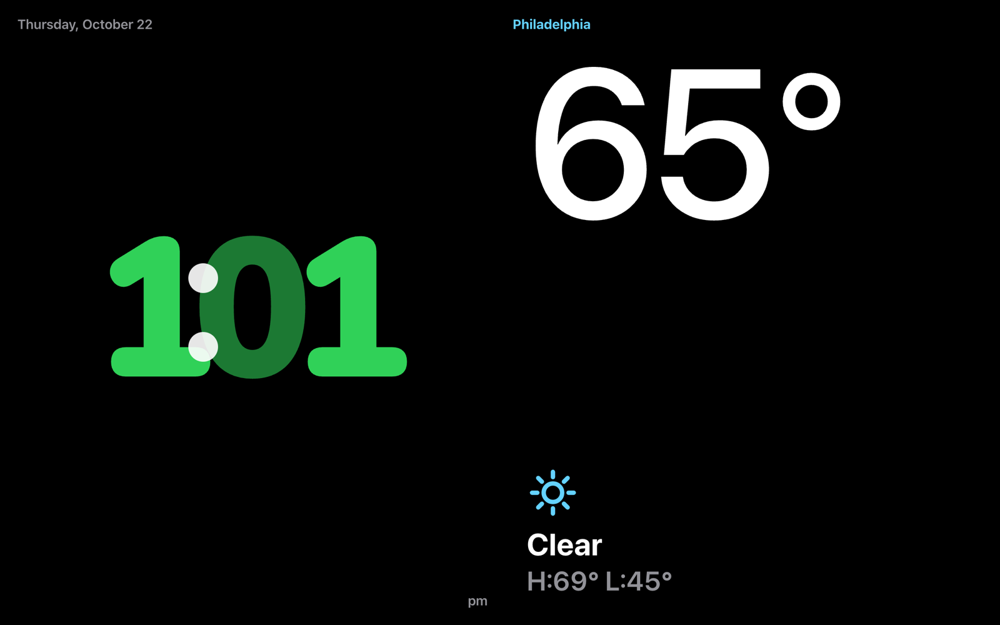
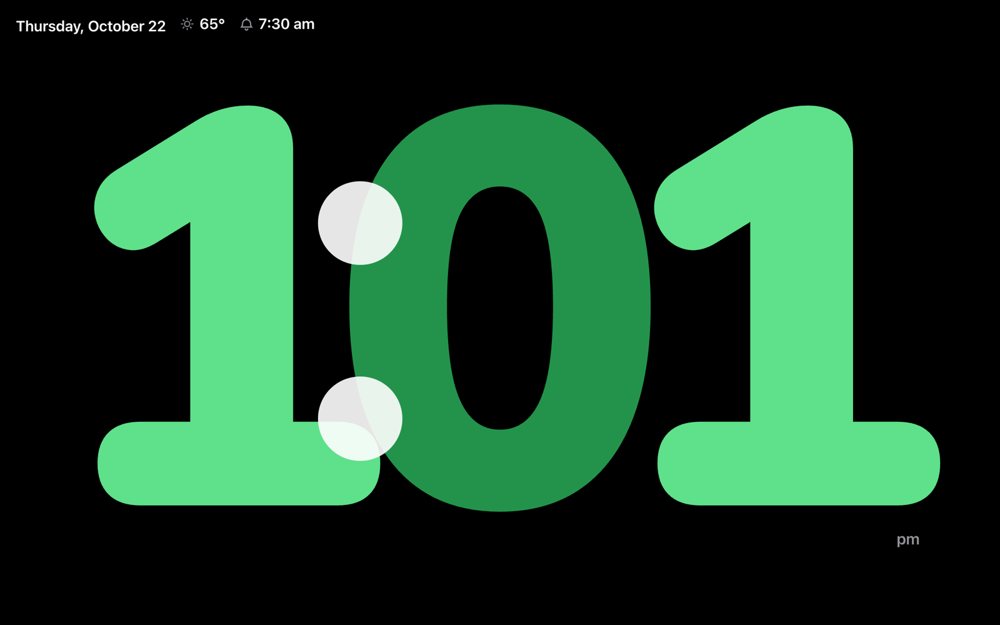
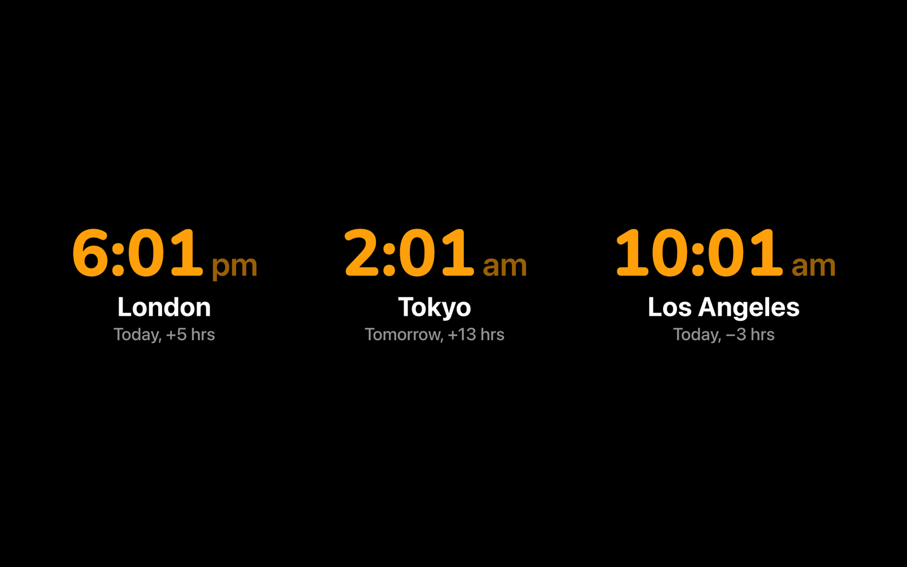
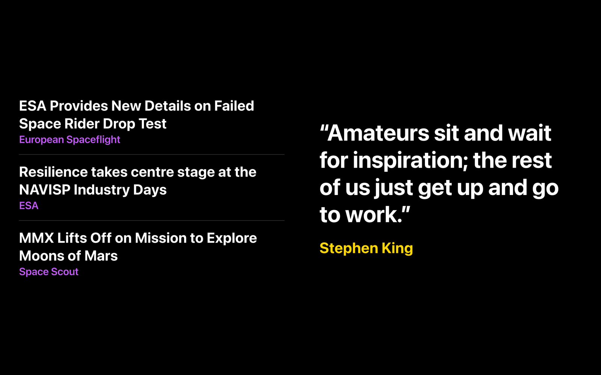
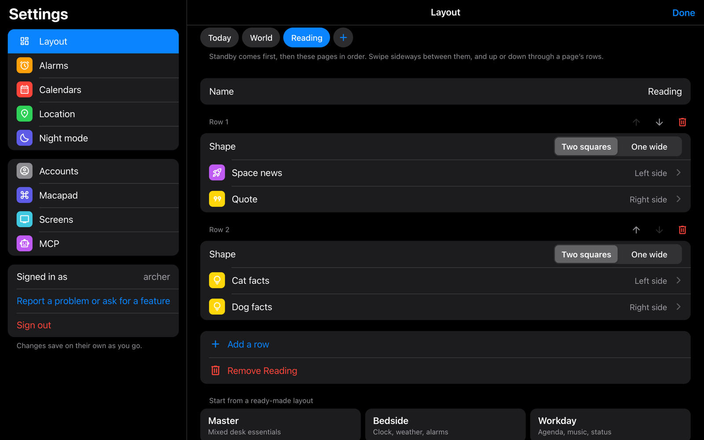
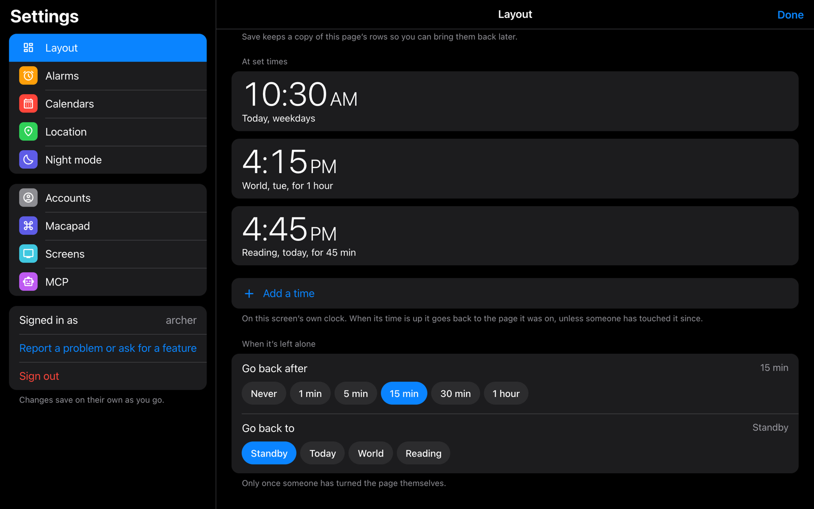
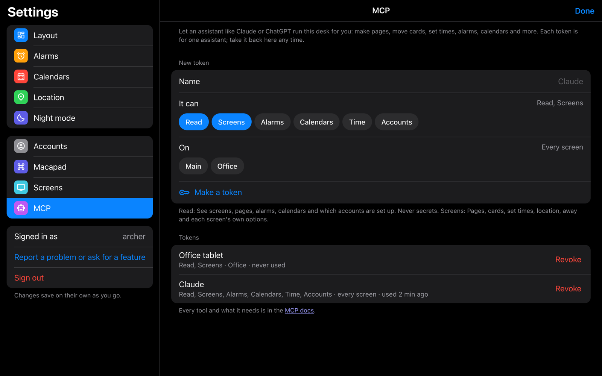

A desk for your spare screen.
archer’s desk turns an Echo Show, a tablet or an old monitor into an iOS StandBy-style dashboard: a huge clock, your widgets, pages that show up when you need them, and an MCP server so Claude or ChatGPT can set it all up for you.

What’s on it
Screens



Setting it up
Everything is tap-first in Settings and saves as you go.


Let an assistant run it
Every account gets an MCP server. Make a token in Settings → MCP, choose what it may do (read, screens, alarms, calendars, time, accounts) and which screens it reaches, and paste one line into Claude Code, or the address and token into any other client.
claude mcp add --transport http archers-desk \ https://your-desk/api/mcp \ --header "Authorization: Bearer desk_…"
Then just ask: “make a Phantom page and show it Tuesdays at 4:15 for an hour.”
MCP guide and every tool
Run it
It’s a Next.js app with SQLite. Locally:
git clone https://github.com/AD-Archer/archersdesk cd archersdesk pnpm install pnpm dev # http://localhost:3000
In production it’s a Docker image (docker compose up); the
README lists the environment variables. Open it
on the screen, sign up, pick a screen name, and tap anywhere for settings.
For Claude.ai or ChatGPT to reach your desk’s MCP server it needs a public https address (a reverse proxy or a tunnel). Claude Code, Claude Desktop and Cursor work on your home network as is.